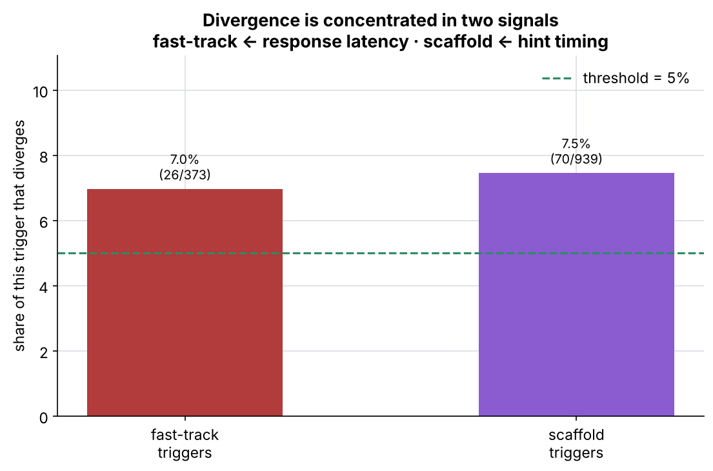
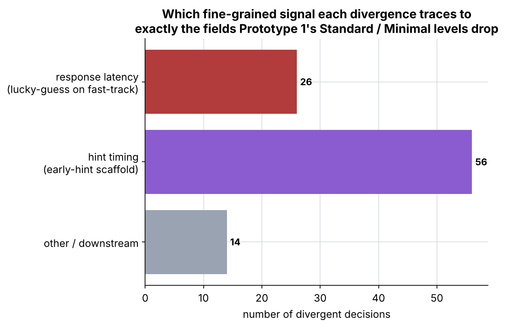
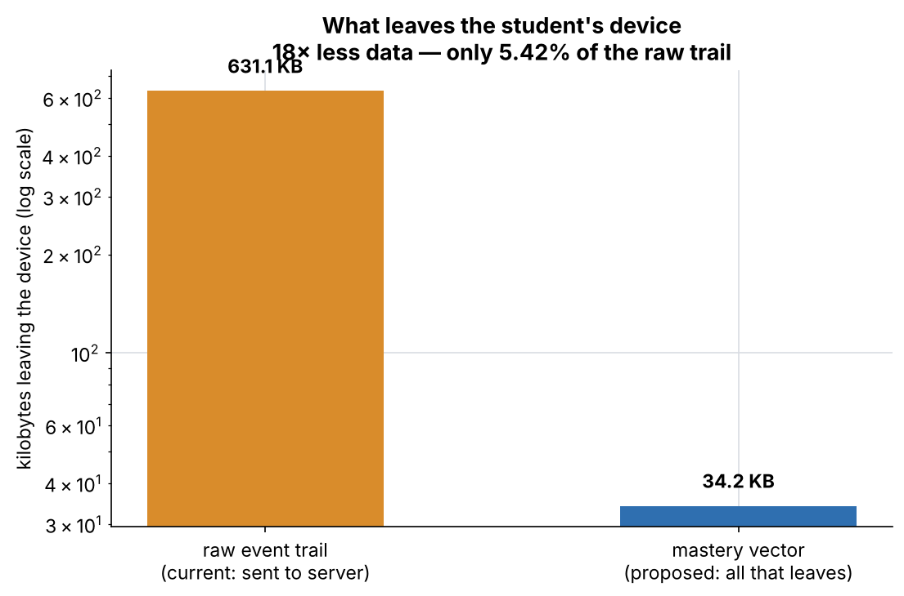

ACE adapts on the device; only the per-skill mastery vector leaves. A replay harness measures how much adaptation depends on the raw trail that would otherwise be sent to a server. Generated 2026-11-12; no real student data used.
It replays the same 1400 fixed logged sessions through two models — a server model that uses the full raw trail (correctness, latency, hint timing) and an on-device model that uses only the correctness-based mastery vector — and records every adaptation decision each makes.
| metric | value |
|---|---|
| every adaptation decision that diverges | 1.00% (≈99.0% identical) |
| scaffold + fast-track triggers that diverge | 8.21% ± 0.77% |
| — fast-track triggers | 6.97% (26/373) |
| — scaffold triggers | 7.45% (70/939) |
| vs the 5% pre-registered threshold | EXCEEDS threshold (does not hold) |

Exceeding the bar is the prototype doing its job: it names the signals the server model depends on — response latency (lucky-guess detection on fast-track) and hint timing (early-hint scaffolds). These are exactly the fields Prototype 1's Standard and Minimal levels drop.

Only 5.42% of the raw trail ever leaves — a 18× reduction. What leaves is a handful of mastery numbers, not the clickstream. COPPA and FERPA care about exactly this: what leaves the student's machine, not what the model computes locally.

Bayesian Knowledge Tracing: Corbett & Anderson (1995). Run on synthetic sessions, which Prototype 3 can supply; the real signal weights come from the engineering team.